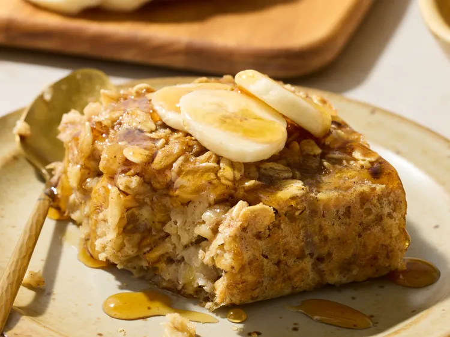

Banana Bread Baked Oatmeal

Description
Banana Bread Baked Oatmeal is a warm, wholesome dish that
combines the comforting flavor of classic banana bread with
the hearty texture of baked oats. Made with ripe bananas,
rolled oats, milk, eggs, and gentle spices like cinnamon and
vanilla, it delivers natural sweetness and a soft, cake-like
consistency. As it bakes, the bananas infuse the oatmeal with
rich aroma and moisture, creating a satisfying balance between
nutrition and indulgence.
Often enjoyed as a breakfast or healthy
dessert, banana bread baked oatmeal is filling, nourishing, and
perfect when served warm—on its own or topped with nuts, yogurt,
or a drizzle of honey 🍌🥣
Ingredients
- (2)1/2 cups rolled oats
- 1/2 teaspoon baking powder
- 1/2 teaspoon ground cinnamon
- 1/2 teaspoon salt
- 3 ripe bananas, mashed (about 1 cup)
- 1 cup whole milk
- 3 large eggs
- 1/3 cup pure maple syrup
- 1/4 cup packed brown sugar
- 1 teaspoon vanilla extract
Steps
- Preheat the oven to 375 degrees F (190 degrees C). Line a 9x9-inch baking pan with parchment paper.
- Stir together rolled oats, baking powder, cinnamon, and salt in a bowl; set aside.
- Mash bananas in a large bowl until smooth. Whisk in milk, eggs, maple syrup, brown sugar, and vanilla extract until well combined.
- Add oat mixture to banana mixture and stir until evenly blended. Pour batter into the prepared pan.
- Bake in the preheated oven until golden brown and set, 35 to 40 minutes.
- Cut into 9 bars. Serve and enjoy!
Home